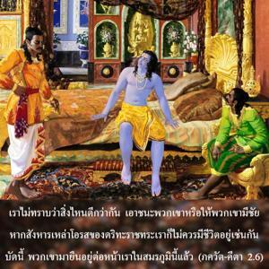
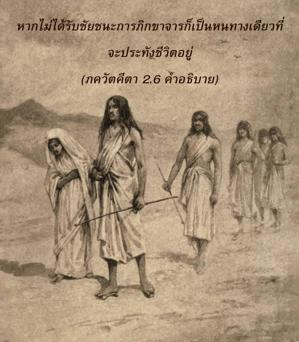
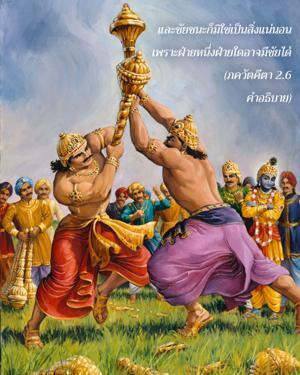
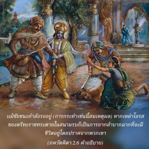
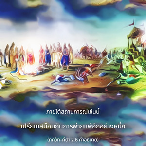

เราไม่ทราบว่าสิ่งไหนดีกว่ากัน ระหว่างการเอาชนะพวกเขา หรือปล่อยให้พวกเขามีชัย หากสังหารเหล่าโอรสของ ธฺฤตราษฺฏฺร เราก็ไม่ควรมีชีวิตอยู่เช่นกัน บัดนี้ พวกเขาได้มายืนอยู่ต่อหน้าเราในสมรภูมินี้แล้ว





อรฺชุน ทรงไม่ทราบว่าควรจะรบ และเสี่ยงในการเบียดเบียนผู้อื่นโดยไม่จำเป็นหรือไม่ ถึงแม้การทำศึกสงครามจะเป็นหน้าที่ของ กฺษตฺริย หรือควรจะหลีกเลี่ยงการรบ และไปใช้ชีวิตอยู่ด้วยการภิกขาจาร หากไม่ได้รับชัยชนะการภิกขาจารก็เป็นหนทางเดียวที่จะประทังชีวิตอยู่ และชัยชนะก็มิใช่เป็นสิ่งแน่นอน เพราะก็ต้องมีฝ่ายหนึ่งฝ่ายใดที่ได้รับชัยชนะ ถึงแม้ว่าชัยชนะกำลังรอพวกเขาอยู่ (การกระทำเช่นนี้สมเหตุสมผล) แต่หากเหล่าโอรสของ ธฺฤตราษฺฏฺร ตายในสนามรบก็จะลำบากมากที่จะมีชีวิตอยู่โดยไม่มีพวกเขา ภายใต้สถานการณ์เช่นนี้เปรียบเสมือนกับการพ่ายแพ้อีกอย่างหนึ่ง อรฺชุน ทรงพิจารณาอย่างรอบคอบเช่นนี้พิสูจน์ให้เห็นอย่างชัดเจนว่าไม่เพียงแต่เป็นสาวกผู้ยิ่งใหญ่ขององค์ภควานฺเท่านั้น แต่ยังมีความรู้แจ้งอย่างสูง และยังทรงสามารถควบคุมจิตใจ และประสาทสัมผัสของตนเองได้อย่างสมบูรณ์อีกด้วย ความปรารถนาของเขาที่จะอยากมีชีวิตอยู่ด้วยการภิกขาจาร (ขอทาน) แม้ตนได้กำเนิดในตระกูล กฺษตฺริย ก็เป็นข้อบ่งชี้อีกอย่างหนึ่งที่แสดงให้เห็นว่าอารจุนะทรงไม่ยึดติดและเป็นผู้มีคุณธรรมอย่างแท้จริงด้วยคุณสมบัติเหล่านี้บวกกับความศรัทธาที่มีต่อคำดำรัสของ ศฺรี กฺฤษฺณ (พระอาจารย์ทิพย์) จึงสรุปได้ว่า อรฺชุน ทรงมีความเหมาะสมเพื่อการหลุดพ้น หากเราไม่สามารถควบคุมประสาทสัมผัสได้ทั้งหมด เราก็จะไม่มีโอกาสเจริญขึ้นมาสู่ระดับแห่งความรู้ได้ หากไม่มีความรู้ และการอุทิศตนเสียสละเราก็จะไม่มีโอกาสได้รับความหลุดพ้น อรฺชุน ทรงมีคุณสมบัติทั้งหมดเหล่านี้ ซึ่งสำคัญกว่าคุณสมบัติอันยิ่งใหญ่ในความสัมพันธ์ทางวัตถุ